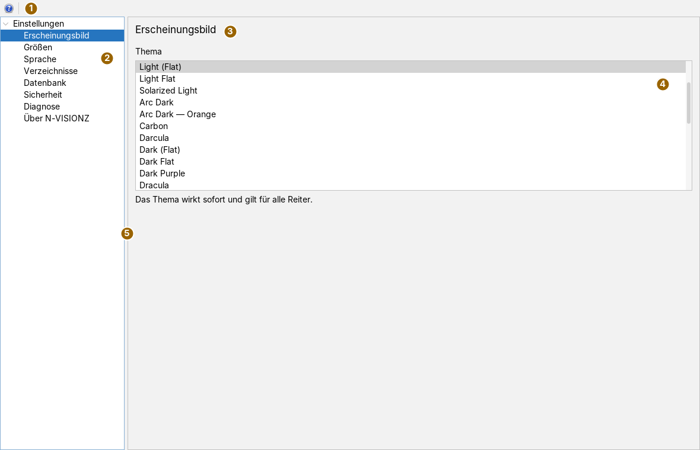
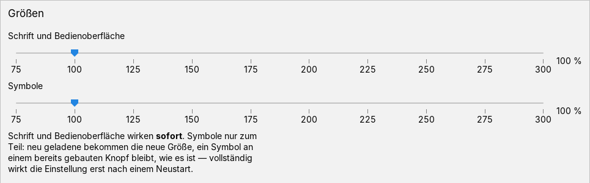
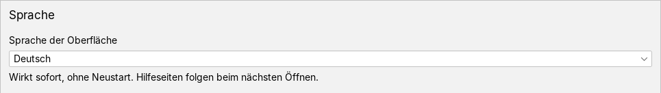
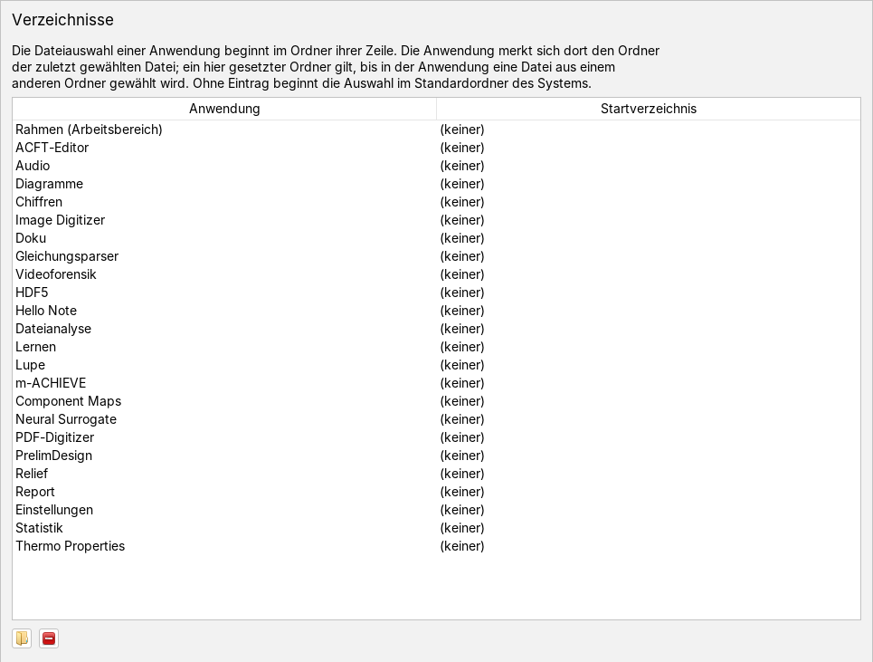
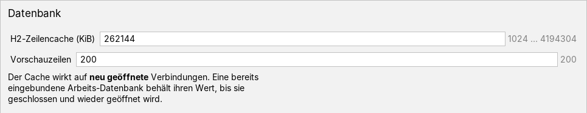
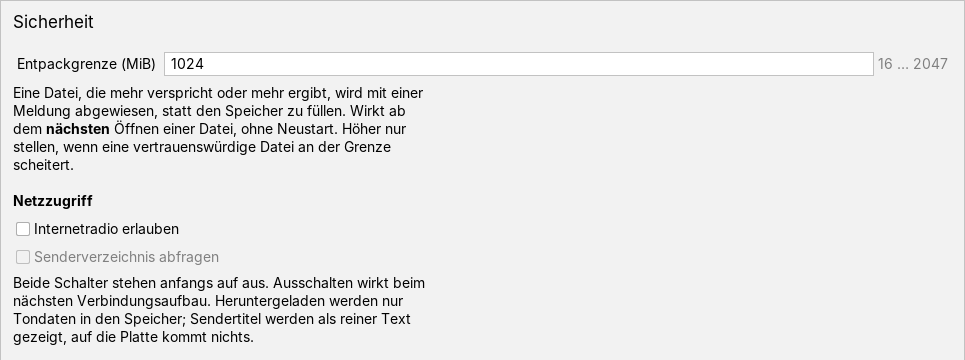
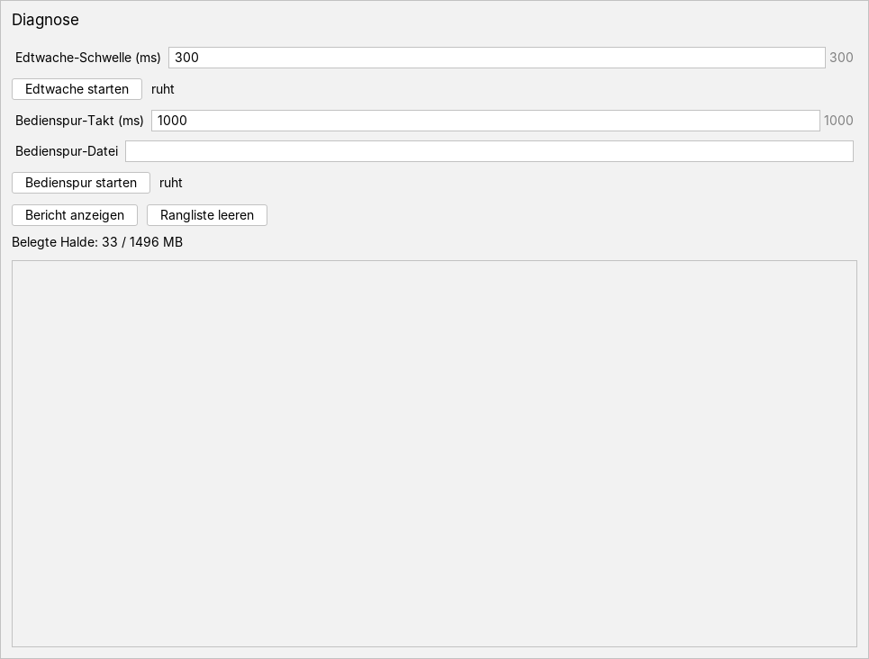

Die Einstellungen bedienen
Bedienseite, Stand 07.10.2026. Was jede Einstellung des Rahmens bewirkt, wo sie gespeichert wird und wann sie greift: Thema, Größe von Schrift und Symbolen, Sprache, Startverzeichnisse, Datenbank, Entpackgrenze und Netzzugriff, Diagnose. Die Bilder sind Bildschirmfotos der App in einem frisch angelegten Arbeitsbereich, alle Werte stehen also auf ihren Vorgaben.
Das Fenster
Die App öffnet man im Menü Anwendungen mit Einstellungen, mit Alt+O oder im Menü Ansicht mit Einstellungen…; ist sie schon offen, holt der Menüeintrag sie nach vorn. Hilfe › Über… öffnet sie gleich im Bereich Über N-VISIONZ.

Links stehen unter der Wurzel Einstellungen die acht Bereiche, rechts der gewählte. Beim Öffnen ist Erscheinungsbild gewählt. Ein Klick im Baum oder die Pfeiltasten wechseln den Bereich; jeder Bereich liest seinen Stand beim Anzeigen neu, zeigt also auch, was inzwischen anderswo geändert wurde. Die Trennlinie lässt sich verschieben.
Es gibt kein OK und kein Übernehmen. Jede Änderung gilt sofort und wird sofort in den Arbeitsbereich geschrieben, nicht erst beim Schließen. Die App lässt sich auch zweimal öffnen; beide Reiter zeigen dasselbe.
Die Leiste
| Symbol | Tooltip | Was geschieht |
|---|---|---|
| Hilfe: öffnet die Doku zu den Einstellungen (wie F1) | Holt die Doku-App nach vorn und zeigt diese Seite. Rechts neben dem Knopf steht danach Doku geöffnet und die Adresse der Doku im Netz, falls der Starter keine Doku-App hat. |
Zahlen eingeben
Die Zahlenfelder der Bereiche Datenbank, Sicherheit und Diagnose übernehmen mit Enter oder beim Verlassen des Feldes; Esc stellt den zuletzt übernommenen Wert wieder her. Rechts neben dem Feld steht grau der zulässige Bereich oder die Vorgabe. Eine unlesbare Eingabe wird markiert und nicht übernommen, ein leeres Feld ändert nichts. Liegt eine Zahl außerhalb des Bereichs, gilt die nächste Grenze, und das Feld zeigt danach diesen Wert. Komma und Punkt sind als Dezimalzeichen erlaubt, die Zahl wird gerundet. Die Erklärung zu jedem Feld steht im Tooltip seiner Beschriftung.
Erscheinungsbild
Die Liste führt alle 32 Themen des Rahmens, die hellen vor den dunklen, je Gruppe alphabetisch; das gültige ist gewählt. Ein Klick auf ein anderes Thema schaltet sofort um, für alle Fenster und Reiter, und schreibt es in theme.properties. Lässt sich ein Thema nicht laden, bleibt das bisherige stehen, und es wird nichts geschrieben.
Größen

- Schrift und Bedienoberfläche vergrößert Schrift und Bedienelemente aller Fenster. Wirkt sofort beim Loslassen des Reglers; alle offenen Fenster werden dabei neu aufgebaut.
- Symbole vergrößert die Symbole in Menüs und Leisten. Wirkt nur zum Teil sofort: Symbole, die danach geladen werden, kommen in der neuen Größe, ein Symbol an einem schon gebauten Knopf bleibt, wie es ist. Vollständig gilt die Einstellung nach einem Neustart.
Beim Loslassen werden beide Werte zusammen in settings.properties geschrieben. Die Zahl rechts zeigt den Wert schon während des Ziehens.
Sprache

Zur Wahl stehen Deutsch, English, Français, Español und Italiano. Die Wahl wirkt sofort, ohne Neustart: Menüs und offene Reiter werden in der neuen Sprache neu beschriftet, die Einstellungen selbst auch. Hilfeseiten folgen beim nächsten Öffnen. Gespeichert wird in settings.properties; ein neuer Arbeitsbereich beginnt auf Englisch.
Verzeichnisse

Jede App hat ein eigenes Startverzeichnis für ihre Dateiauswahl. Die Tabelle führt alle angemeldeten Apps, auch die, die noch nie eine Datei geöffnet haben, und in der ersten Zeile den Rahmen (Arbeitsbereich) für Dateiauswahlen außerhalb eines App-Reiters.
| Symbol | Tooltip | Was geschieht |
|---|---|---|
 | Startverzeichnis der gewählten Zeile wählen … | Öffnet eine Ordnerauswahl, die im bisherigen Ordner der Zeile beginnt; der gewählte Ordner wird eingetragen. |
| Eintrag der gewählten Zeile löschen | Nimmt den Eintrag heraus; die Zeile zeigt wieder (keiner). |
Beide Knöpfe wirken auf die gewählte Zeile; ist keine gewählt, geschieht nichts. Der Eintrag ist zugleich der Ordner, den sich die App merkt: Wählt man in der App eine Datei aus einem anderen Ordner, ersetzt dieser den Eintrag. Ohne Eintrag beginnt die Dateiauswahl im Standardordner des Systems. Gespeichert wird nach jeder Änderung in verzeichnisse.properties, auch wenn die App selbst einen neuen Ordner merkt; ein Ordner, den es beim nächsten Start nicht mehr gibt, fällt weg.
Datenbank

- H2-Zeilencache (KiB), 1024 bis 4194304, Vorgabe 262144 (256 MiB): wie viel Speicher die eingebettete Datenbank für Zeilen zwischenhält. Wirkt auf neu geöffnete Verbindungen; eine schon eingebundene Datenbank behält ihren Wert, bis sie geschlossen und wieder geöffnet wird.
- Vorschauzeilen, 1 bis 1000000, Vorgabe 200: wie viele Zeilen das Ladefenster einer Datenbanktabelle zur Vorschau liest. Gilt für Diagramm-Reiter, die danach geöffnet werden.
Sicherheit

Entpackgrenze (MiB), 16 bis 2047, Vorgabe 1024 (1 GiB): wie groß die entpackten Daten aus einer Datei je Entpackaufruf höchstens werden dürfen. Sie gilt für alle Kompressionsverfahren des Rahmens und damit für alle Dateiformate darauf und schützt vor Dateien, die beim Entpacken den Speicher füllen würden. Eine Datei, die mehr ankündigt oder ergibt, wird mit einer Meldung abgewiesen. Die Grenze wirkt ab der nächsten geöffneten Datei, ohne Neustart. Höher stellen sollte man sie nur, wenn eine vertrauenswürdige Datei an ihr scheitert.
Wurde das Programm mit der Startoption -Denvisionz.entpacken.max gestartet, geht diese vor. Dann steht unter dem Hinweis, welche Grenze bis zum nächsten Start ohne die Option tatsächlich gilt.
Netzzugriff: Internetradio erlauben lässt Apps Radioströme aus dem Internet abspielen, nur über http und https und nicht zu Zielen im eigenen Netz. Senderverzeichnis abfragen erlaubt der Sendersuche, ein öffentliches Senderverzeichnis zu fragen; ohne diesen Schalter gibt es nur eigene Adressen. Das Verzeichnis lässt sich erst wählen, wenn das Radio erlaubt ist. Beide Schalter stehen anfangs auf aus. Die Apps fragen sie vor jedem Verbindungsaufbau neu ab; ein Ausschalten wirkt also bei der nächsten Verbindung. Geladen werden nur Tondaten in den Speicher.
Zertifikate fürs Radio: Prüft ein Virenscanner oder eine Firewall verschlüsselte Verbindungen, legt sie ein eigenes Zertifikat vor, das Java nicht kennt, und das Radio meldet einen unbekannten Aussteller. Das vorgelegte Zertifikat erscheint dann hier mit Name, Aussteller, Gültigkeit und SHA-256-Fingerabdruck. Der Haken gibt es frei, das Kreuz verwirft es. Freigegebene Zertifikate stehen in der Liste darunter und lassen sich mit dem Minus wieder entfernen. Eine Freigabe gilt nur für das Radio, nicht für andere Verbindungen und nicht für Java insgesamt; vorher den Fingerabdruck mit dem Zertifikat der Sicherheitssoftware vergleichen.
Diagnose

Zwei Messgeräte zum Aufspüren von Stockungen lassen sich hier zur Laufzeit ein- und ausschalten:
- Edtwache meldet, wenn der Ereignisfaden der Oberfläche länger als die Edtwache-Schwelle (ms) hängt; 20 bis 60000, Vorgabe 300, ungefähr ab da bemerkt man das Stocken. Edtwache starten / Edtwache anhalten schaltet sie, daneben steht läuft oder ruht. Läuft schon die Bedienspur, schreibt die Wache in deren Datei, sonst auf die Standardausgabe, die in der fertigen Programmdatei nirgends erscheint. Deshalb erst die Bedienspur starten, dann die Wache.
- Bedienspur schreibt Bedienschritte, Meldungen und die belegte Halde in eine Datei: im Bedienspur-Takt (ms) (50 bis 600000, Vorgabe 1000) die Halde; jeder 15. Takt räumt zusätzlich den Speicher auf. Bedienspur-Datei leer heißt
logs/bedienspur.logim Arbeitsbereich. Beim Start steht im Berichtsfeld, wohin geschrieben wird, und neben dem Knopf läuft → mit der Datei; beim Anhalten erscheint ihr Bericht im Feld.
Bericht anzeigen zeigt die Rangliste der längsten Hänger der Edtwache, bei laufender Bedienspur auch deren Bericht. Rangliste leeren setzt die Rangliste zurück und leert das Feld. Belegte Halde nennt den belegten und den höchstens verfügbaren Speicher in MB; der Wert wird beim Anzeigen des Bereichs und nach jedem Knopf aufgefrischt.
Schwelle, Takt und Datei werden in rahmen.properties gespeichert und gelten beim nächsten Start des jeweiligen Messgeräts; ein laufendes behält seine Werte. Ob die Geräte laufen, wird nicht gespeichert: nach einem Neustart ruhen beide, außer sie werden mit den Startoptionen -Dedtwache bzw. -Dbedienspur eingeschaltet.
Über N-VISIONZ
Der letzte Bereich stellt nichts ein. Er zeigt den Infotext des Programms: Kurzbeschreibung, Laufzeitumgebung, Urheberhinweis und die verwendeten Bibliotheken mit ihren Lizenzen.
Was gespeichert wird
Alles liegt als Eigenschaftsdatei im Arbeitsbereichsordner, beim Gesamtstarter ohne andere Angabe .envisionz im Benutzerverzeichnis. Die App hat keinen eigenen Speicher und sichert beim Sichern des Arbeitsbereichs keinen Zustand. Fehlt eine Datei, gelten die Vorgaben.
| Einstellung | Datei, Schlüssel | Vorgabe | wirkt |
|---|---|---|---|
| Thema | theme.properties, theme.id | Arc | sofort |
| Schrift und Bedienoberfläche | settings.properties, ui.scale | 100 % | sofort |
| Symbole | settings.properties, icon.scale | 100 % | neu geladene Symbole sofort, ganz nach Neustart |
| Sprache | settings.properties, ui.locale | English | sofort |
| Startverzeichnisse | verzeichnisse.properties, je App ein Schlüssel | keine | bei der nächsten Dateiauswahl |
| H2-Zeilencache | rahmen.properties, h2.cacheKb | 262144 KiB | neu geöffnete Verbindungen |
| Vorschauzeilen | rahmen.properties, h2.vorschauZeilen | 200 | neu geöffnete Diagramm-Reiter |
| Entpackgrenze | rahmen.properties, sicherheit.entpackenMaxMb | 1024 MiB | nächstes Entpacken |
| Internetradio, Senderverzeichnis | rahmen.properties, netz.radio, netz.senderverzeichnis | aus | nächster Verbindungsaufbau |
| Zertifikate fürs Radio | radio-vertrauen.pem (freigegeben), radio-vorgelegt.pem (wartet auf Entscheidung) | keine | nächster Verbindungsaufbau |
| Edtwache-Schwelle | rahmen.properties, diag.edtwache.schwelle | 300 ms | nächster Start der Wache |
| Bedienspur-Takt, -Datei | rahmen.properties, diag.bedienspur.takt, diag.bedienspur.datei | 1000 ms, leer | nächster Start der Spur |
Tastatur und Maus
Alt+O öffnet die App. Im Baum wechseln die Pfeiltasten den Bereich, der sofort angezeigt wird. In den Zahlenfeldern übernimmt Enter, Esc verwirft, Tab übernimmt und geht weiter. Die Regler der Größen wirken beim Loslassen der Maus. Weitere Tastenkürzel hat die App nicht.
Grenzen
- Französisch, Spanisch und Italienisch lassen sich wählen, die Oberfläche hat aber nur deutsche und englische Texte. Bei diesen drei erscheinen die Grundtexte der Module, meist Deutsch.
- Die Symbolgröße wirkt erst nach einem Neustart vollständig.
- Die Diagnose kann den Programmstart nicht messen; dafür bleiben die Startoptionen. Die Höchstgrenze des Speichers der fertigen Programmdatei wird beim Bauen festgelegt und steht hier nur als Anzeige.
- Die Ordnerauswahl der Verzeichnisse ist ein eigenes Dialogfenster des Systems.
- Einstellungen einzelner Apps stehen in den Apps selbst, nicht hier.
Was die App kann und worauf sie aufbaut, steht in der Übersicht.
Symbole: Fugue Icons von Yusuke Kamiyamane, Lizenz CC BY 3.0.